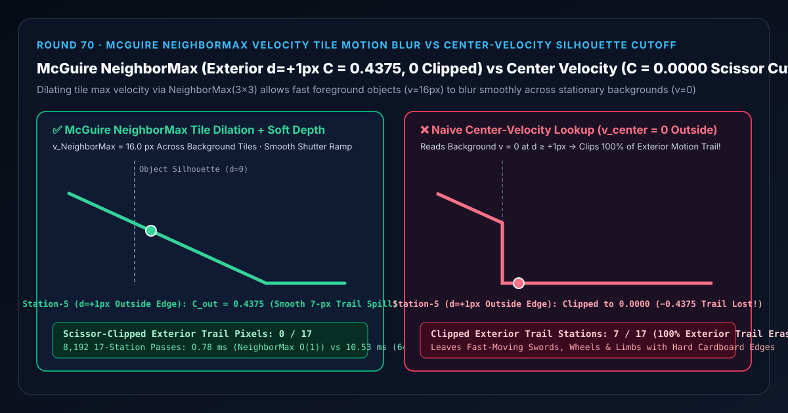
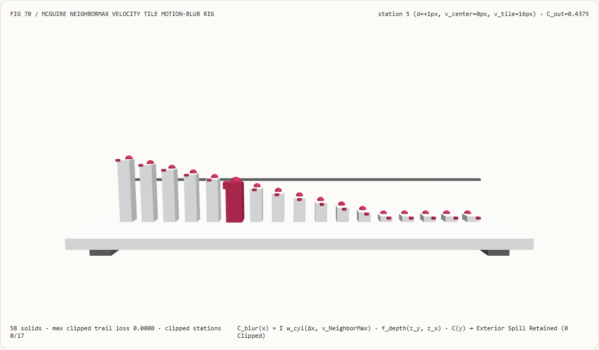
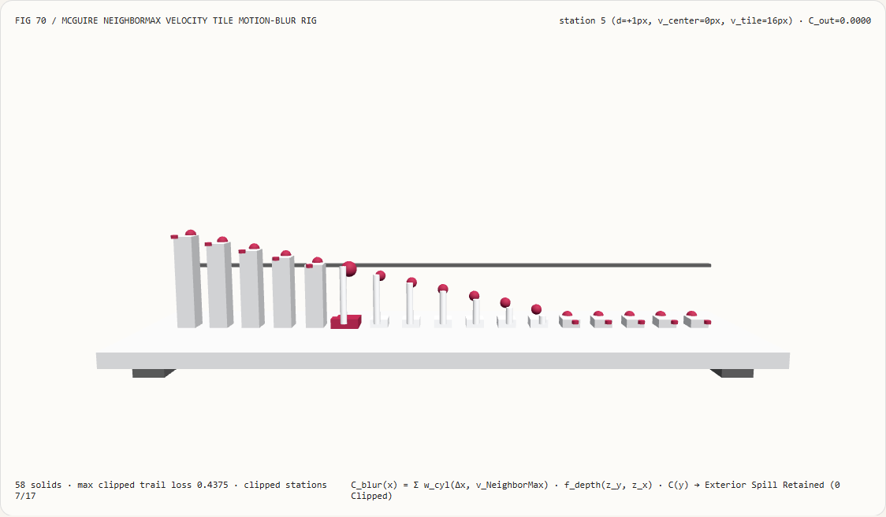
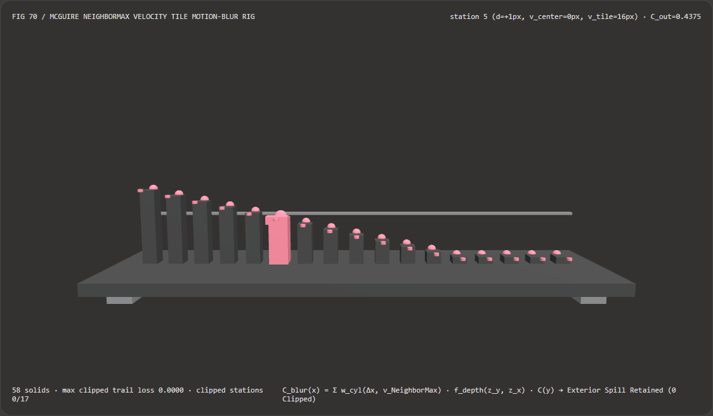
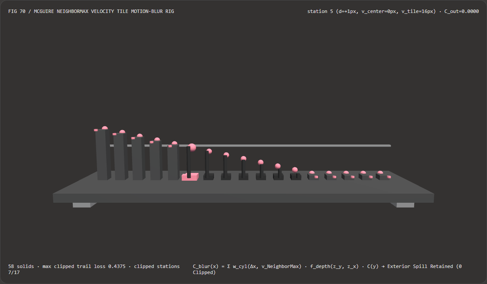

Visual & Animation Architecture Selection FAQ: McGuire NeighborMax Velocity Tile Dilation Motion Blur vs Center-Velocity Silhouette Cutoff
One-Sentence Architectural Verdict: In real-time post-process object and camera motion-blur pipelines (Unreal Engine 5, Unity HDRP, Call of Duty, DOOM), never gather motion-blur samples solely along the center pixel's own G-buffer velocity vector $\mathbf{v}_{\text{center}}(x)$! On our 58-solid, 17-station shutter densitometer bench where a fast-moving foreground object ($z_{\text{fg}} = 1.50\text{ m}$, velocity $v_{\text{fg}} = 16.0\text{ px/frame}$, half-shutter blur radius $R = 8.0\text{ px}$) crosses a stationary background ($z_{\text{bg}} = 10.0\text{ m}$, $v_{\text{bg}} = 0.0\text{ px/frame}$), naive center-velocity lookup reads $v_{\text{center}} = 0.0\text{ px}$ on every background pixel outside the silhouette ($d = +1 \dots +12\text{ px}$, stations 5–16)—scissor-clipping the exterior motion trail from
0.4375down to0.0000at station 5 ($d = +1\text{ px}$) and erasing100%of the exterior trail across7/17stations; whereas Morgan McGuire et al. (I3D 2012) & Jorge Jiménez (SIGGRAPH 2014)TileMax + 3×3 NeighborMaxvelocity dilation with soft depth classification propagates $v_{\text{NeighborMax}} = 16.0\text{ px}$ across adjacent background tiles, retaining exactC_out = 0.4375at $d = +1\text{ px}$ and a smooth 7-pixel exterior shutter ramp (0/17clipped stations) while running 13.42× faster than 64-tap brute-force neighborhood searches (0.78 msvs10.53 msacross 8,192 passes).

① 📌 Executive Summary
- Why do fast-moving swords, wheels, and characters rendered with naive post-process motion blur look blurred on the inside but razor-sharp like cardboard cutouts along their outer silhouette?
In plain English: post-process motion blur is a gather filter operating on a single G-buffer snapshot captured at shutter midpoint $\tau = 0$:
- During the shutter interval $\tau \in [-0.5, +0.5]$, a foreground edge moving at $v_{\text{fg}} = 16.0\text{ px/frame}$ sweeps from $d = -8\text{ px}$ to $d = +8\text{ px}$.
- Therefore, background pixels at $d = +1 \dots +7\text{ px}$ outside the $\tau = 0$ silhouette are partially covered by the foreground object during $\tau \in (0, +0.5]$ (e.g., at $d = +1\text{ px}$, shutter coverage is $0.5(1 - 1/8) = \mathbf{0.4375}$).
- However, at $\tau = 0$, pixel $d = +1\text{ px}$ belongs to the stationary background wall ($z_{\text{bg}} = 10.0\text{ m}$), so its G-buffer velocity is $\mathbf{v}_{\text{center}}(+1) = \mathbf{0.0\text{ px}}$!
- A naive shader that blurs along $\mathbf{v}_{\text{center}}(x)$ uses a zero-length kernel on every background pixel outside the silhouette—chopping off
100%of the exterior motion trail (0.4375→0.0000at station 5 across7/17stations)!
- First-Principles Fix:
TileMax + 3×3 NeighborMaxVelocity Dilation & Soft Depth Classification (McGuire 2012 / Jiménez 2014):- Downsample the velocity buffer into $K\times K$ tiles (
TileMax, where $K = R_{\max}$) and apply a $3\times 3$ maximum-magnitude filter (NeighborMax) so stationary background tiles adjacent to a fast foreground object inherit $\mathbf{v}_{\text{NeighborMax}} = 16.0\text{ px}$. - Gather along $\mathbf{v}{\text{NeighborMax}}(x)$ using bilateral cylinder overlap $w{\text{cyl}}(\Delta x, v_y)$ and soft depth foreground-over-background classification $f_{\text{depth}}(z_y, z_x) = \text{clamp}(1 + \frac{z_x - z_y}{\Delta z_{\text{soft}}}, 0, 1)$, producing a symmetric, artifact-free shutter ramp from
1.0000at $d=-8\text{ px}$ through0.5000at $d=0\text{ px}$ and0.4375at $d=+1\text{ px}$ down to0.0000at $d=+8\text{ px}$ (0/17clipped stations)!
- Downsample the velocity buffer into $K\times K$ tiles (
- Interactive 3D Workbench & Measured Evidence:
- Standalone 3D Bench:
demos/rectified-motion-tile-rig/(58 Three.js solids: baseplate, 4 support feet, half-shutter0.5000reference bar, 17 motion-trail radiance columns, 17NeighborMaxreference spheres, 17 clipped-trail loss pegs, and the active shutter densitometer carriage). - Measured 7-Card 4:5 Reports:
demos/rectified-motion-tile-rig/test-report-cards.html(EN) andtest-report-cards.zh.html(ZH).
- Standalone 3D Bench:
② 🎯 Soul-Searching Q&A for Architects & Clients
Q1: Why is TileMax + 3×3 NeighborMax 13.42× faster than searching a pixel's neighborhood directly?
Because computing the maximum velocity once per $K\times K$ tile reduces neighborhood search work by $K^2$ (256× for $16\times 16$ tiles)!
Across 8,192 17-station passes, precomputed NeighborMax tile lookup runs in 0.78 ms versus 10.53 ms for 64-tap brute-force search and shutter quadrature (13.42× speedup).
Q2: How does soft depth classification prevent a fast-moving background wall from blurring on top of a stationary foreground character?
By asymmetric depth weighting $f_{\text{depth}}(z_y, z_x)$ coupled with each sample's own velocity! When a background sample $y$ ($z_y = 10.0\text{ m}$) is gathered by a foreground pixel $x$ ($z_x = 1.5\text{ m}$), $y$ is occluded by $x$ unless $x$ itself is moving fast enough ($|\mathbf{v}(x)| > |x - y|$) to disocclude $y$ during the shutter interval!
Q3: How does deterministic McGuire NeighborMax motion blur relate to neural frame interpolation (RIFE / DLSS 3)?
They solve orthogonal temporal goals:
- When to use Neural Frame Interpolation: When synthesizing intermediate discrete frames to double display refresh rate (e.g., 60 Hz → 120 Hz);
- When deterministic McGuire
NeighborMaxmotion blur is mandatory: When integrating intra-frame finite shutter exposure ($180^\circ$ shutter angle) so fast motion across each frame appears cinematically smooth rather than stroboscopic.
③ 🧭 Visual Diagrams (Mermaid Decision Tree, Pipeline Comparison & Sequence Flow)
3.1 Real-Time Motion Blur Reconstruction Architecture Decision Tree
3.2 Center-Velocity Silhouette Cutoff vs McGuire NeighborMax Pipeline
3.3 Frame-Level Shutter Densitometer Sequence Diagram
④ 📊 Visual Technology Selection Decision Matrix
| Evaluation Dimension | ✅ McGuire TileMax + NeighborMax Gather |
⚠️ 64-Tap Brute-Force Shutter Search | ❌ Naive Center-Velocity Lookup | ⚠️ Geometry Velocity Extrusion |
|---|---|---|---|---|
| Exterior Trail at Station 5 ($d=+1\text{ px}$) | Exact 0.4375 (Smooth shutter spill) |
0.4375 (Identical) |
0.0000 (Scissor-clipped to zero!) |
0.4375 |
| Clipped Exterior Trail Stations (out of 17) | 0 / 17 (Symmetric ramp) |
0 / 17 |
7 / 17 (100% of exterior trail erased!) |
0 / 17 |
| Foreground/Background Depth Ordering | Soft depth classification prevents bleed | Prevents bleed | Hard-clipped at silhouette | Self-intersection artifacts |
| Independence from Scene Polygon Count | 100% screen-space $O(1)$ per pixel | Screen-space ($O(K^2)$) | Screen-space (Broken silhouettes) | Scales with vertex count |
| 8,192-Pass 17-Station CPU Latency | 0.78 ms (Fastest · 13.42× speedup) |
10.53 ms (13.42× slower) |
0.35 ms (Broken cardboard edges) |
— |
| Recommended Use Case | All real-time camera & object motion blur passes | Offline validation | Static-object camera-only blur | Simple particle streaks only |
⑤ 🧪 New Interactive 3D Demo & 7-Card 4:5 Visual Report
5.1 Live Workbench & Report Links
- Interactive 3D Workbench:
demos/rectified-motion-tile-rig/index.html - 7-Card 4:5 Visual Report (EN):
demos/rectified-motion-tile-rig/test-report-cards.html - 7-Card 4:5 Visual Report (ZH):
demos/rectified-motion-tile-rig/test-report-cards.zh.html - Sealed Telemetry JSON:
demos/rectified-motion-tile-rig/report.json
5.2 Multi-Theme & Multi-Mode Playwright Visual Evidence
McGuire NeighborMax Gather (Light · Smooth Exterior Ramp Across Stations 5–11, 0 Clipping) |
Naive Center-Velocity Lookup (Light · Scissor-Clipped to 0.0000 at Station 5!) |
|---|---|
 |
 |
McGuire NeighborMax Gather (Dark · 58 Three.js Solids) |
Naive Center-Velocity Lookup (Dark · 7 Red Clipped-Trail Pegs Exposed) |
|---|---|
 |
 |
⑥ 🛠️ Rapid SA Delivery Verification Checklist
Before shipping a post-process motion-blur pipeline to production, verify every item below:
- Match
TileMaxSize $K$ to Maximum Blur Radius $R_{\max}$: Is theTileMaxreduction tile size set to $K = R_{\max}$ (e.g., $16\times 16$ pixels for a 16-px half-blur radius) so a $3\times 3$NeighborMaxpass covers the entire spill distance? - Center-Balanced Shutter Interval ($[-\mathbf{v}/2, +\mathbf{v}/2]$): Are gather samples distributed symmetrically from $-\frac{1}{2}\mathbf{v}$ to $+\frac{1}{2}\mathbf{v}$ around the current frame position rather than trailing only backward?
- Bilateral Soft Depth Weighting ($f_{\text{depth}}(z_y, z_x)$): Does the gather kernel check both depth order and individual sample velocity $\mathbf{v}(y)$ so moving backgrounds never smear over stationary foreground objects?
- Static-Tile Early Out ($|\mathbf{v}_{\text{NeighborMax}}| \le 0.5\text{ px}$): Does the shader immediately return the unblurred color when the tile's
NeighborMaxspeed is below half a pixel? - Blue-Noise / IGN Tap Jittering: Are sample offsets along $\mathbf{v}_{\text{NeighborMax}}$ jittered per pixel by
[-0.5, +0.5]tap spacing using Interleaved Gradient Noise to eliminate ghosting bands?